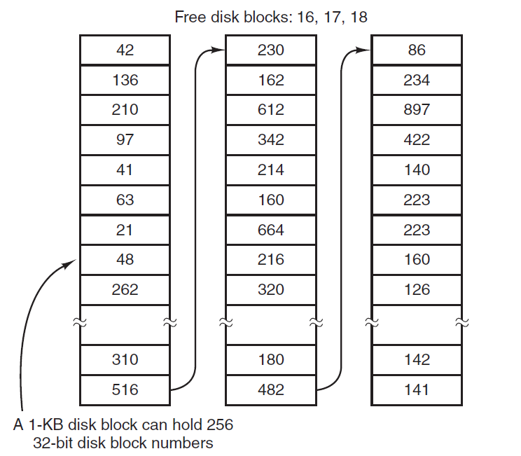
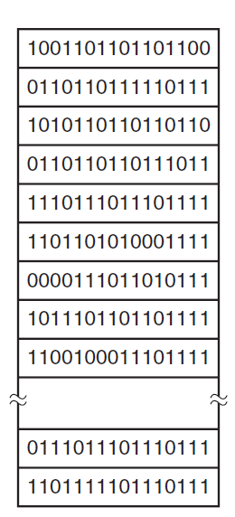
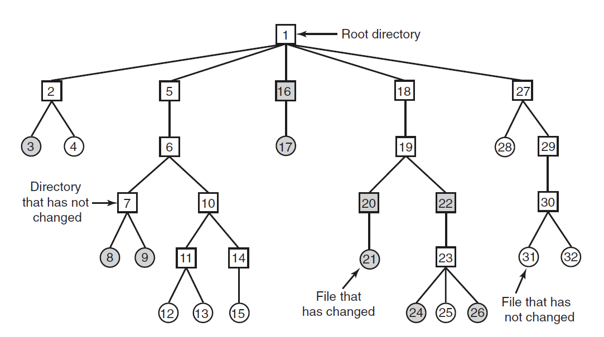
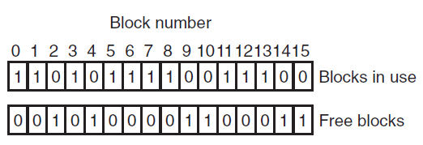
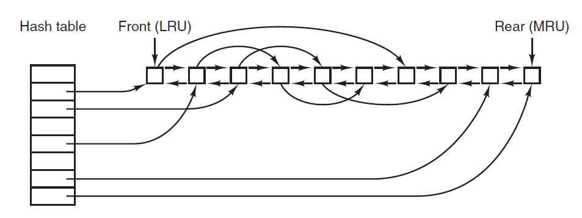
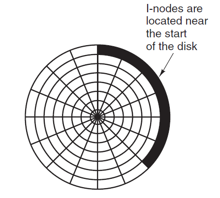
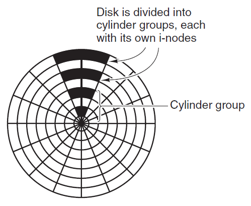

Since all the files are normally stored on disk one of the main concerns of file system is management of disk space.
The main question that arises while storing files in a fixed-size blocks is the size of the block. If the block is too large space gets wasted and if the block is too small time gets waste. So, to choose a correct block size some information about the file-size distribution is required. Performance and space-utilization are always in conflict.
After a block size has been finalized the next issue that needs to be catered is how to keep track of the free blocks. In order to keep track there are two methods that are widely used:


Multiuser operating systems often provide a mechanism for enforcing disk quotas. A system administrator assigns each user a maximum allotment of files and blocks and the operating system makes sure that the users donot exceed their quotas. Quotas are kept track of on a per-user basis in a quota table.
If a computer's file system is irrevocably lost, whether due to hardware or software restoring all the information will be difficult, time consuming and in many cases impossible.
So it is adviced to always have file-system backups.
Backing up files is time consuming and as well occupies large amount of space, so doing it efficiently and convenietly is
important. Below are few points to be considered before creating backups for files.
There are two ways for dumping a disk to the backup disk:

To deal with inconsistent file systems, most computers have a utility program that checks file-system consistency. For example, UNIX has fsck and Windows has sfc. This utility can be run whenever the system is booted. The utility programs perform two kinds of consistency checks.

Since the access to disk is much slower than access to memory, many file systems have been designed with various optimizations to improve performance as described below.
The most common technique used to reduce disk access time is the block cache or buffer cache. Cache can be defined as a collection of items of the same type stored in a hidden or inaccessible place. The most common algorithm for cache works in such a way that if a disk access is initiated, the cache is checked first if the disk is present, if yes then the read request can be satisfied without a disk access else the disk is copied to cache first and then the read request is processed.

The above figure depicts how to quickly determine if a block is present in a cache or not, for doing so a hash table can be implemented and look up the result in a hash table.
Another technique to improve file-system performance is to try to get blocks into the cache before they are needed to increase the hit rate. This works only when files are read sequentially. When a file system is asked for block 'k' in the file it does that and then also checks before hand if 'k+1' is available if not it schedules a read for the block k+1 thinking that it might be of use later.
Another way to increase file-system performance is by reducing the disk-arm motion by putting blocks that are likely to be accessed in sequence close to each other,preferably in the same cylinder.

In the above figure all the i-nodes are near the start of the disk, so the average distance between an inode and its blocks will be half the number of cylinders, requiring long seeks. But to increase the performance the placement of i-nodes can be modified as below.

Due to continuous creation and removal of files the disks get badly fragmented with files and holes all over the place. As a consequence, when a new file is created, the blocks used for it may be spread all over the disk, giving poor performance. The performance can be restored by moving files around to make them contiguous and to put all (or at least most) of the free space in one or more large contiguous regions on the disk.